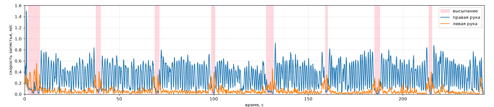

Не удалось открыть видео . Проверьте, что файл лежит по этому пути рядом с index.html, и откройте страницу в браузере, который умеет H.264: Firefox, Chrome или Edge. Chromium и встроенный просмотрщик VS Code H.264 не поддерживают.
